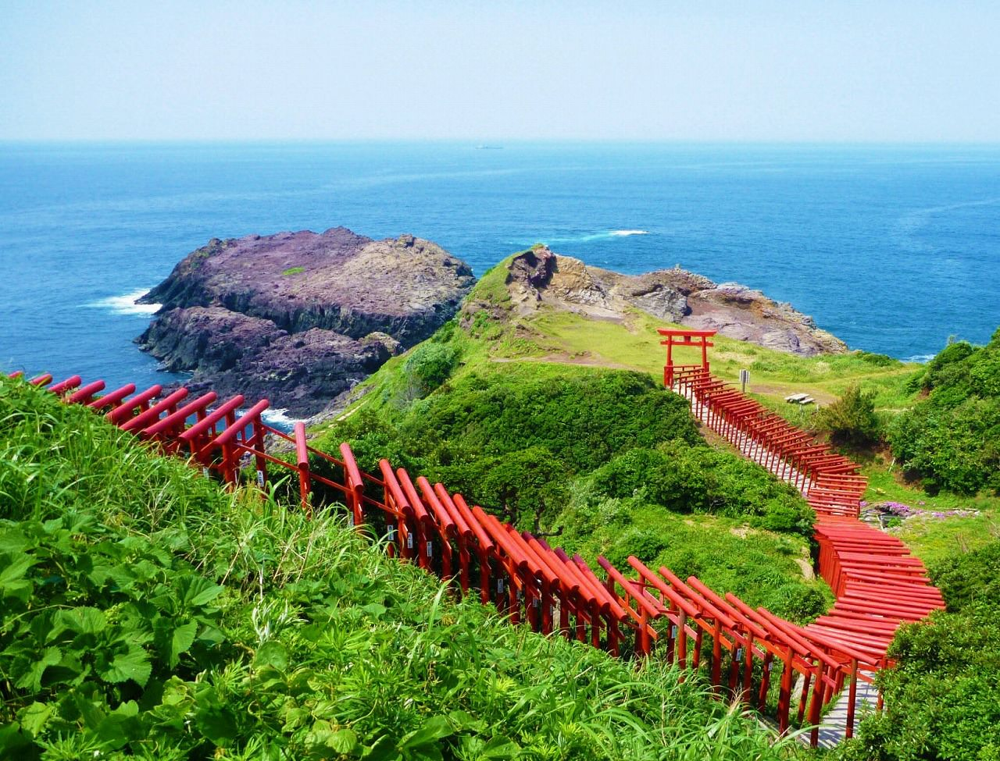

元乃隅稲成神社

元乃隅稲成神社とは？
元乃隅稲成神社(もとのすみいなりじんじゃ)は、昭和30年に、地域の網本であった岡村斉さんの枕元に白狐が現れ、 「これまで漁をしてこられたのは誰のおかげか。」と過去からの関わりを詳細に述べた後、「吾をこの地に鎮祭せよ。」 というお告げがあったことにより、島根県津和野町太皷谷稲成神社から分霊された神社です。商売繁盛、大漁、 海上安全は元より、良縁、 子宝、開運厄除、 福徳円満、交通安全、 学業成就、願望成就の大神です。 「稲荷」神社は全国で四万社ほどありますが、「稲成」神社は二社のみです。昭和62年から10年間かけて奉納された123基の鳥居が、 龍宮の潮吹側から100ｍ以上にわたって並ぶ景色は圧巻です。神社敷地内にある高さ約6ｍの大鳥居の上部には賽銭箱が設置されており、 見事、賽銭を投げ入れることができたら願い事が叶うと言われています。
(2017年 ながと観光なび https://nanavi.jp/sightseeing/motonosumiinarijinja/)より
アクセス
・JR山陰本線「長門古市駅」からタクシーで約20分
・JR山陰本線「長門市駅」からタクシーで約40分
・中国自動車道「美祢IC」から車で約60分